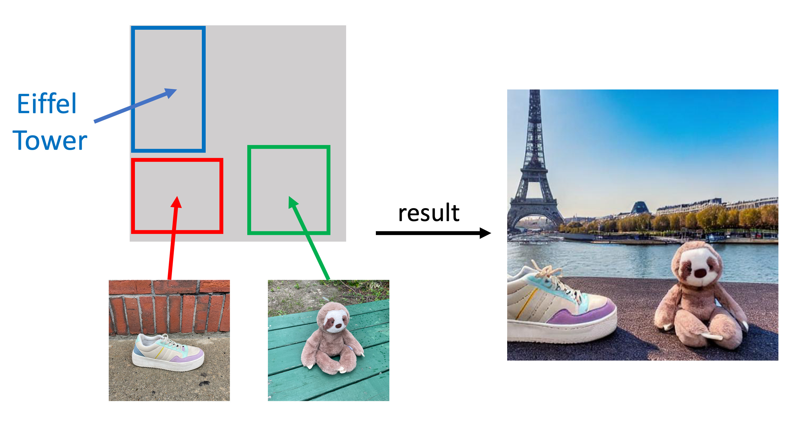
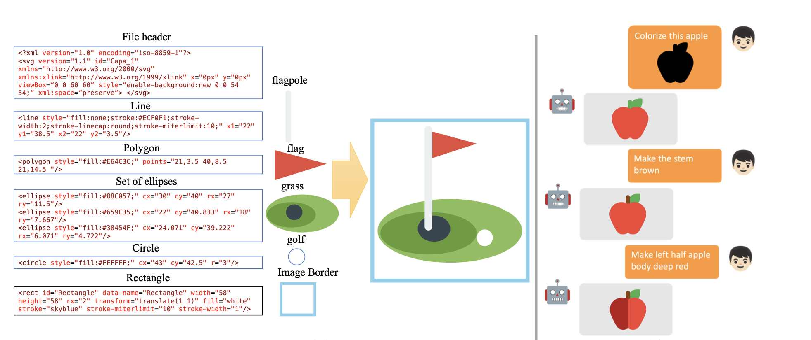
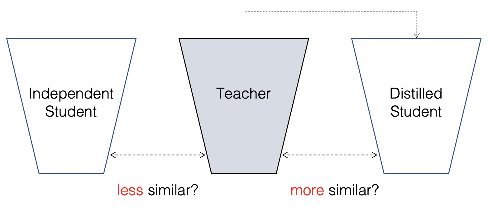
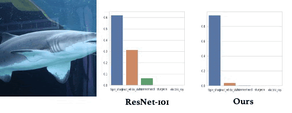
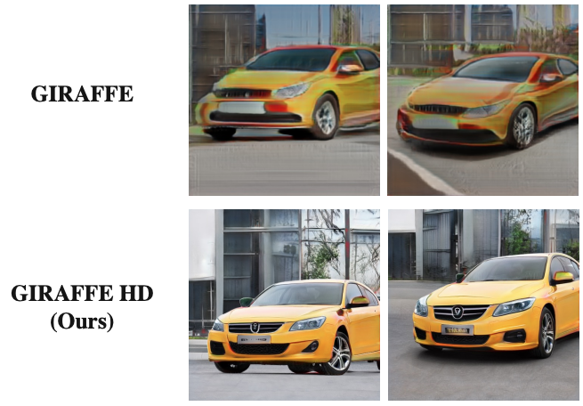
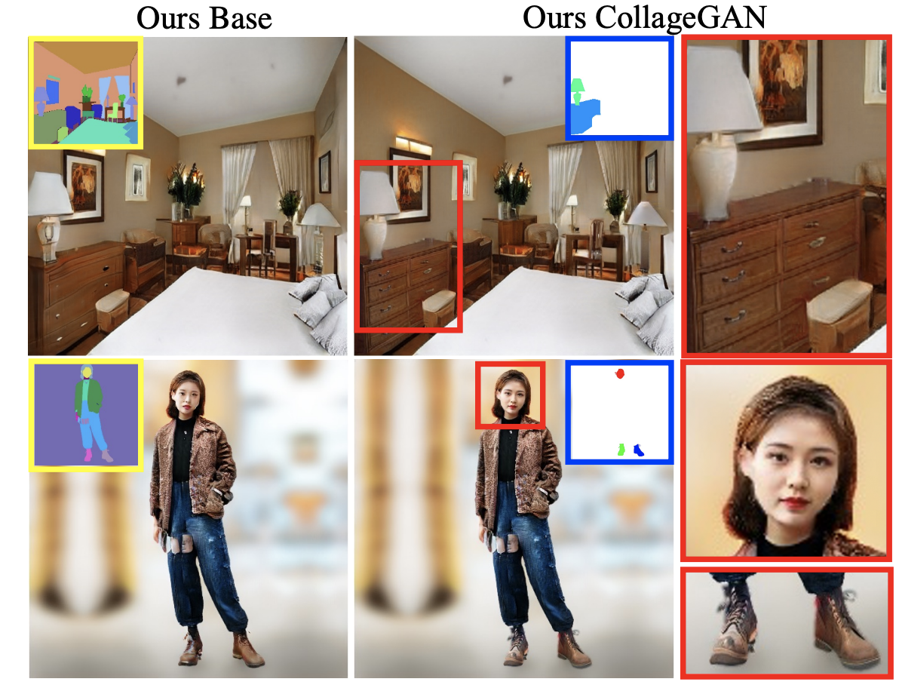
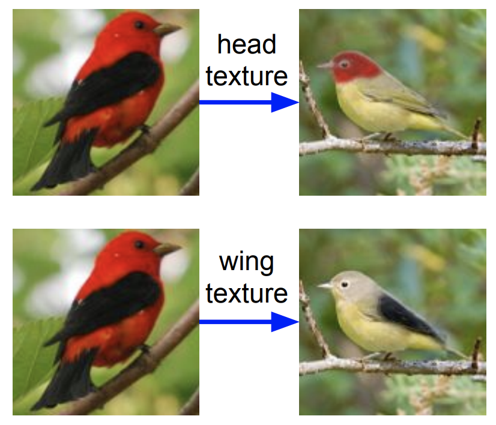
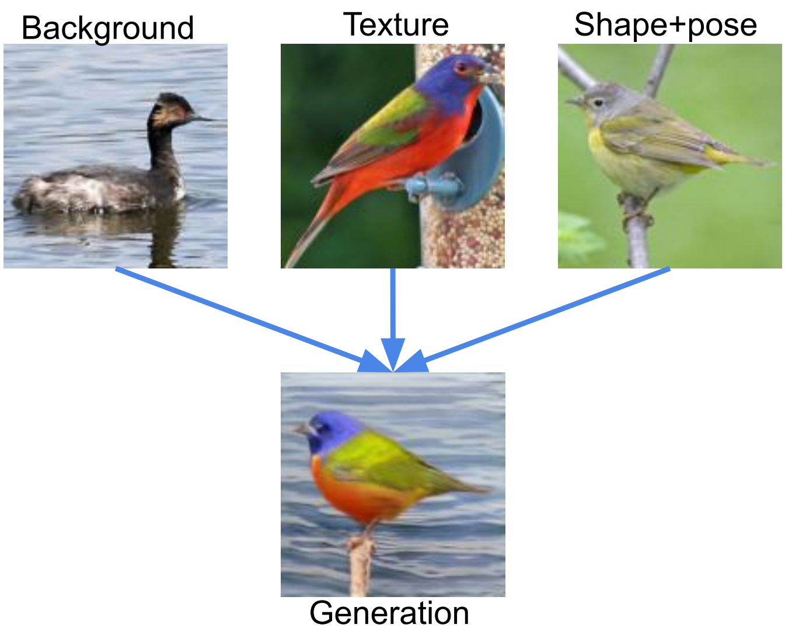
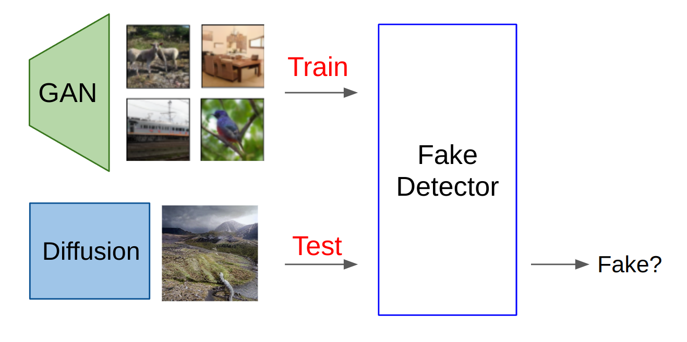

Hi! I am a research scientist at Adobe Research.
Before joining Adobe, I received my PhD in Computer Science from the
University of Wisconsin–Madison in 2024, advised by
Prof. Yong Jae Lee.
My research spans two main directions:
personalized AI systems that leverage
user memory for tailored, context‑aware experiences, and
controllable generative models,
with a recent focus on unified multimodal models and video generation.

Organized into the two themes I am most actively pursuing. Toggle between selected highlights and the full archive above.
Personalized AI Systems & User Memory
Building models that remember, adapt, and respond to individual users — from personalized assistants to memory-aware streaming video understanding.

Controllable Generative & Multimodal Models
Unified multimodal models, controllable image & video generation, and editing. Including foundational work on grounded generation, vision–language models, and generative model analysis.














